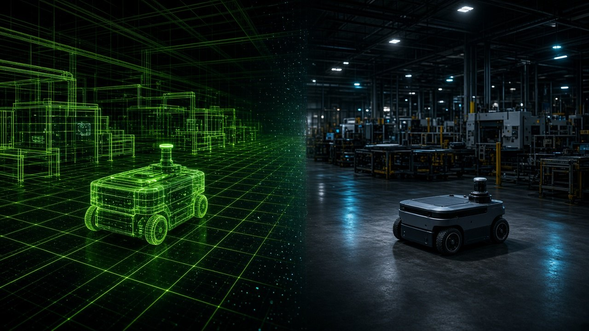
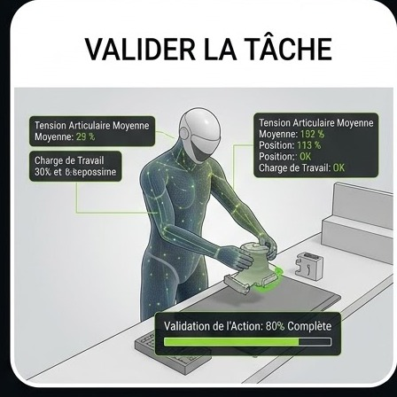
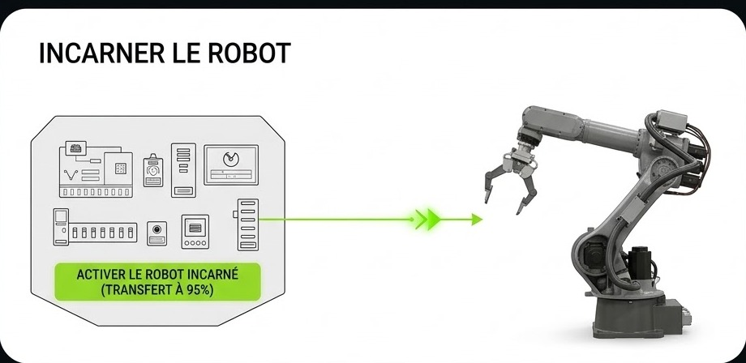

Étape 01
Besoin terrain
Partir de la tâche réelle, des contraintes d’atelier et des critères de succès opérationnels.
Un Digital Twin n’a de sens que s’il mène à un robot incarné, validé pour le terrain.
OpenUSD · Omniverse · Isaac Sim · Isaac Lab · Edge AI · VLA



Une chaîne continue : cadrer le cas d’usage, construire le Digital Twin, simuler, valider, puis incarner sur machine — et itérer.
Partir de la tâche réelle, des contraintes d’atelier et des critères de succès opérationnels.
Modéliser l’environnement et les actifs dans un Digital Twin interopérable, prêt pour la simulation.
Explorer scénarios, perception et politiques avec Isaac Sim, Isaac Lab et Omniverse — avant le matériel.
Mesurer robustesse, sécurité et performance sur critères industriels ; réduire le risque avant investissement.
Transférer vers le robot incarné : Edge AI, intégration mobile ou humanoïde, boucle terrain.
Réinjecter les retours terrain dans le Digital Twin et la simulation — améliorer en boucle fermée.
Pas un catalogue de machines : une capacité d’intégration qui relie Digital Twin, simulation et Physical AI jusqu’à l’incarnation.
Représenter l’usine, les flux et les contraintes avec un niveau de fidélité utile à la décision — ancré dans OpenUSD quand le pipeline le demande.
Entraîner, tester et stresser comportements robotiques (VLA, politiques, perception) dans des mondes simulés avant le déploiement.
Relier les briques — données, modèles, simulateurs, validation — en une trajectoire cohérente vers une preuve de concept opérable.
Fermer la boucle jusqu’à la machine réelle : Edge AI, intégration industrielle, et critères de réussite sur le sol d’usine.
Décrivons ensemble le besoin terrain, le périmètre Digital Twin et la trajectoire vers une preuve incarnée.